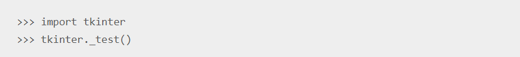

Як встановити додаткову бібліотеку в систему
PIP - це система управління пакетами, яка використовується для встановлення та управління програмними пакетами, написаними на Python. PIP можна розшифрувати як "бажана програма для встановлення" або "Пакети для встановлення Pip". PIP для Python - це утиліта для управління встановленнями пакетів PyPI з командного рядка. Якщо ви використовуєте стару версію Python для Windows, можливо, вам доведеться встановити PIP. Ви можете легко встановити PIP в Windows, завантаживши інсталяційний пакет, відкривши командний рядок та запуск інсталятора. Ми розглянемо як встановити PIP у Windows, перевірити його версію, оновити та налаштувати.-
Перевірка чи PIP вже встановлений
Для роботи з PIP використовується командний рядок(command prompt). Для того щоб це зробити, відкрийте меню пуск, введіть cmd і відкрийте додаток("Командная строка", "Command prompt", "Командний рядок").
Після цього введіть команду pip help. У вас має відобразитись наступна інформація.

Якщо цього не сталось(pip йде автоматично з мовою програмування python версії 3.4 і вище, також в комплекті вже встановлюється virtualenv і pyvenv), вам необхідно довстановити pip власноруч. -
Перевірка версії Python
Як утиліта Python, PIP вимагає активної інсталяції Python. У нових версіях віртуального середовища Python та Python PIP вже встановлено, і вам не потрібно його перевстановлювати.
Щоб визначити, чи встановлено Python:
-Відкрийте вікно командного рядка.
-Коли відкриється вікно консолі, введіть: python
Якщо ця команда не розпізнана, вам потрібно встановити Python, перш ніж ви зможете встановити PIP. Якщо команда розпізнана, Python відповідає своєю версією та списком команд. Коли Python встановлений правильно, ви побачите:
-
Установка pip
Перш ніж встановлювати PIP, завантажте файл get-pip.py: get-pip.py на pypa.io.
Завантажте файл у потрібну папку Windows. Ви можете зберегти файл у будь-якому місці, але пам’ятайте шлях, щоб потім використовувати його.
Знайдіть ще раз в меню пуск "Командний рядок", натисніть на прогрму правою кнопкою миші і виберіть "Запустити від імені адміністратора". Використайте команду cd щоб перейти в папку де ви зберегли завантажений файл. а далі введіть команду python get-pip.py. Після успішного встановлення, для перевірки ви можете ввести команду з пунтку 1. Також ви можете перевірити версію pip використвуючи команду pip --version -
Оновлення pip
у випадку повідомлення що ваша версія pip застаріла, введіть команду python -m pip install --upgrade pip
Що таке tkinter
Tkinter - це безкоштовна бібліотека для розробки графічного інтерфейсу на мові Python (начинна з
Python 3.0 переіменована в tkinter). Tkinter розширюється як інтерфейс Tk і є інтерфейсом до Tcl
/ Tk. Tkinter входить у стандартний дистрибутив Python. Tkinter дозволяє створювати додатки
вигляду 
Починаючи з версії python 3.8 tkinter входить в стандартні бібліотеки мови python.
Щоб перевірити чи встановлена бібліотека на ваш комп'ютер, ви можете запустити idle і написати
базову програму.

У складі бібліотеки присутні спільні графічні компоненти:
- Toplevel / Tk - Окно верхнього рівня (корневой виджет).
- Frame - Рамка. Зберігає в собі інші візуальні компоненти, що використовуються для групування віджетів.
- Label - Этикетка. Показує певний текст або графічне зображення.
- Entry - Однострочное поле ввода тексту.
- Text - Форматируемое поле ввода тексту. Дозволяє показувати, редагувати та форматувати текст за допомогою різних стилів, а також вводити текст до малюнків та вікна.
- Canvas - Холст. Можна використовувати для виводу графічних примітивів, таких як прямоугольники, еліпси, лінії, а також текст, зображення та вікно.
- Button - Кнопка. Проста кнопка для виконання команд та інших дій.
- Radiobutton - Переключатель. Представляє одно з альтернативних значень кількох переменних. Обычно действует в группе. Коли користувач вибирає яку-небудь опцію, з більш виборним в цій же групі елементам вибір знімається.
- Checkbutton - Флажок. Похожий на кнопку Radio, не має можливості множинного вибору, надаючи окрему переменну на кожен екземпляр віджета.
- Listbox- Список. Показує список, з якого користувач може видати один або кілька елементів. Полоса прокрутки - Полоса прокрутки. Можна використовувати разом з деякими іншими компонентами для їх прокрутки.
- Menu - Меню. Служите для організації вспливних (спливаюче) та ніспадаючих (випадаюче) меню.
- Menubutton- Кнопка-меню. Використовується для організації випадаюче меню.
Гра в життя
«Гра́ життя́» — клітинний автомат, вигаданий англійським математиком Джоном Конвеєм 1970
року. Опис гри було опубліковано в жовтневому випуску журналу Scientific American, в рубриці
«Математичні ігри» Мартіна Гарднера (Martin Gardner). Нижче ви можете побачити приклад
роботи гри
Задачі
Задача 1
Задача 2